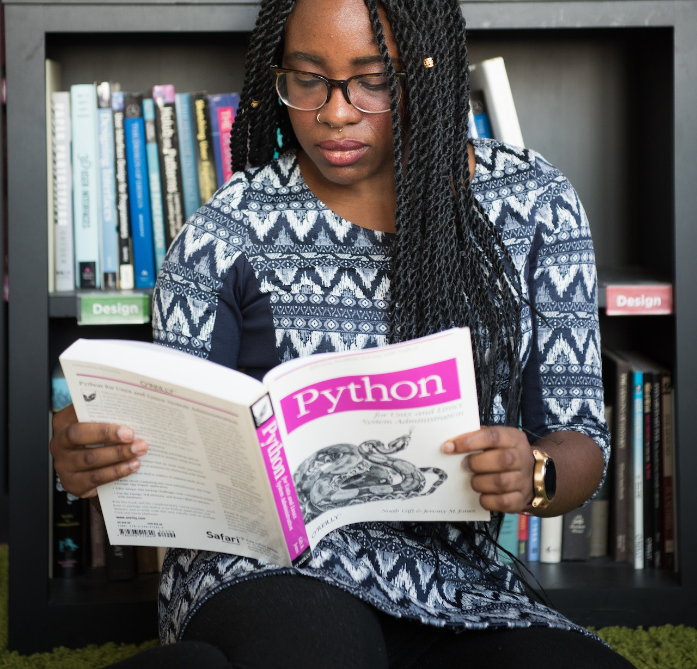
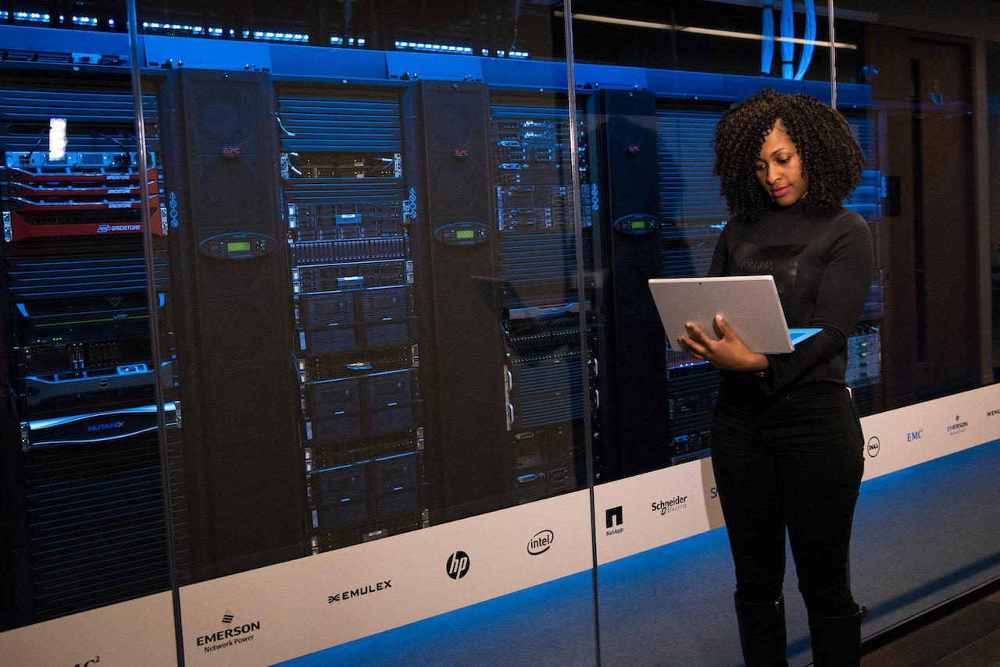

Feito no dia 18 de maio 2023
Jornada do Zero à Primeira Vaga
Esse é meu primeiro projeto,tive como base o NLW,
esse projeto tem como objetivo mostrar minha evolução na área da programação
e contar sobre meus estudos.
13 de abril 2023
Comecei meus estudos pela internet
Nesse dia foi quando comecei meus estudos na área de programação,queria seguir no ramo de Back-end,
acredito que a como a maioria esmagadora comecei com Python, muitos induzidos pelos vídeos.
No fim não acredito que tenha sido uma boa idéia pois Python realmente é uma linguagem bem
acessível e fácil de compreender, porém o mercado de trabalho voltado a Python ainda mais vagas
Junior não acredito que seja das melhores. Então se eu tivesse começando agora escolheria PHP
ou Java,
Mas pra quem tem dificuldade para lógica de programação Python ou Portugol
é uma ótima escolha ou até mesmo
iniciar pelo Front-end. OBS: Terminei de estudar Python básico tudo pelo
(Curso em vídeo) dia 3 de maio.
3 de maio 2023
Comecei Python

Ápos terminar Python iniciei POO, que é a orientação voltada a objetos, que basicamente
te ensina métodos,classes e herança assim tornando muito mais fácil
aquelas tarefas repetitivas. OBS:Não tem no (Curso em vídeo) pelo menos no dia de hoje
porém encontra em outros canais que tem cursos de Python completo e gratuito, terminei POO dia 6 de maio.
6 de maio 2023
Comecei Psql

Psql é usado para banco de dados, mas também pode ser usado diversos outros como (MySql,MongoDB,Oracle,etc),
é basicamente plataformas que usam como linguagem o Sql. OBS: Tudo isso que aprendi não possuo
domínio ainda, por isso é importante a prática para não esquecer oque já aprendeu, terminei Psql dia 9 de maio.
10 de maio 2023
Iniciei JavaScript
Aqui nessas aturas desisti de Python, pois só agora que tinha percebido sobre as vagas de emprego. Observei que
basicamente todas exigiam pelo mesnos o básico de Front-end, então não havia o porque de começar ous estudos
de Django(Framework usado em Python). JavaScript é usado com HTML e CSS não precisa aprende-los para começar
JS mas durante o próprio curso de JS você começará aprender bastante sobre ambos, ainda não acabei porém posso
dizer que com a lógica aprendida JS não é complicado mas se você errar uma coisinha no código vai demorar 1 ano
pra encontrar o erro. OBS: Estou vendo no (Curso em vídeo) por enquanto não terminei, resolvi ver
o NLW e estou gostando muito e aprendendo principalmente essa parte de Front-end.